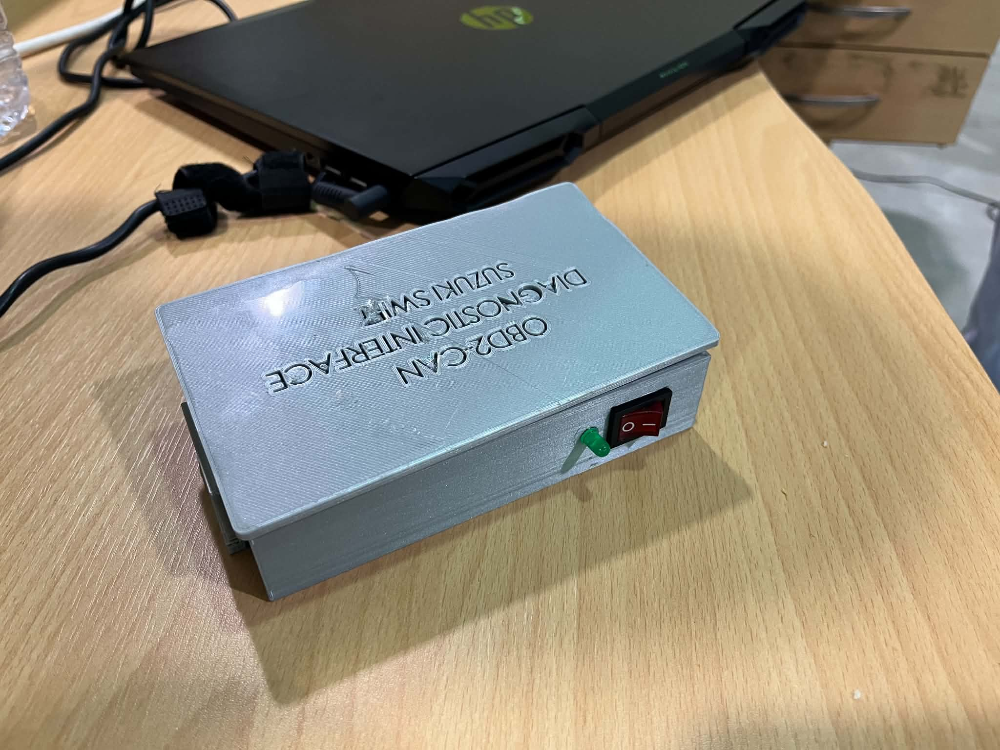
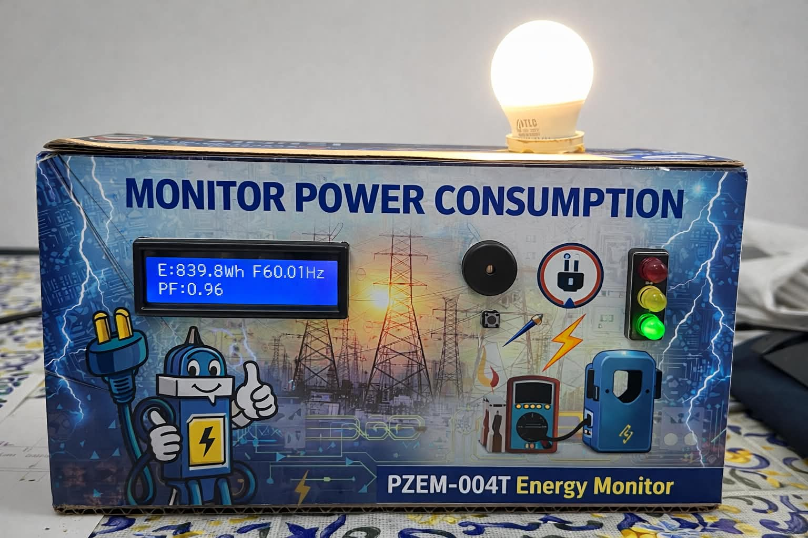

Engineering student in Industrial Electronics, specialized in automotive software, embedded systems, vehicle diagnostics, data analysis and intelligent mobility.
Le projet le plus visuel du portfolio est placé immédiatement après la couverture : prototype réel, images du boîtier et vidéo de démonstration fournie.
PROJECT 01 · OBD-II / EMBEDDED DIAGNOSTICS
Interface de diagnostic automobile
Un prototype d’interface OBD-II présenté avec son boîtier imprimé en 3D et ses éléments électroniques. La vidéo intégrée est la démonstration réelle fournie avec le portfolio.
Engineering profile · Automotive · Embedded · Data
Industrial Electronics & Automotive Systems
Engineering student focused on automotive electronics, embedded systems, vehicle diagnostics, data analysis and intelligent mobility. This portfolio presents technical projects, prototypes, studies and the DRÄXLMAIER × ENISo training pathway.
What I build
Vehicle diagnostics and CAN/OBD-II interfaces
Embedded monitoring and IoT systems
Data dashboards and predictive maintenance concepts
Engineering mindset
From system architecture to prototype, testing and documentation — with clear technical diagrams and traceable results.
Études de cas
Projets sélectionnés
Trois axes complémentaires : visibilité sur l’état véhicule, pilotage de flotte et cohérence électrique.
PROJECT 01 / EMBEDDED DIAGNOSTICS
Diagnostic véhicule connecté — OBD-II & CAN
Chaîne de collecte et de visualisation de données véhicule pour faciliter l’observation des paramètres et la compréhension des défauts.
Systèmes embarqués
VEHICLEECU / OBD-II
→
CAN BUSAcquisition
→
ESP32Gateway
→
DASHBOARDVisualisation
Architecture fonctionnelle illustrative — adapter aux composants réellement utilisés.
Objectif & démarche
Mettre en place un flux lisible entre les données issues du véhicule et leur exploitation sur une interface de suivi.
Comprendre les échanges OBD-II / CAN et la chaîne d’acquisition.
Organiser les données pour faciliter leur lecture et leur interprétation.
Présenter les informations utiles au diagnostic avec une interface claire.
OBD-IICAN BusESP32Python / WebData visualization
PROJECT 02 / FLEET OPERATIONS
Fleet Analytics — disponibilité & maintenance
Concept de tableau de bord pour transformer des données de parc en indicateurs de disponibilité, d’immobilisation et de maintenance.
Étude de cas conceptuelle : les chiffres affichés sont fictifs et servent uniquement à expliquer la logique de l’outil.
01 — Architecture fonctionnelle
Le tableau de bord ne remplace pas un logiciel de maintenance : il consolide les événements, met en évidence les dérives et aide à prioriser les vérifications.
02 — Indicateurs à définir
KPI
Définition de travail
Décision utile
Disponibilité
Temps disponible ÷ temps planifié × 100
Mesurer l’aptitude du parc à assurer le service
Immobilisation
Somme des durées d’indisponibilité sur la période
Identifier les véhicules qui pèsent le plus
MTTR
Durée totale de réparation ÷ nombre d’interventions
Repérer les réparations longues
Récurrence
Nombre de répétitions par panne / véhicule
Déclencher une analyse de cause
03 — Exemple de cycle opérationnel
Importer les historiques de maintenance et le planning de disponibilité.
Normaliser les identifiants, unités, horodatages et catégories de panne.
Contrôler les valeurs manquantes et les durées négatives ou impossibles.
Calculer les KPI par véhicule, type de panne et période.
Créer une liste d’actions avec priorité, responsable et date de revue.
Exemple de règle : une panne récurrente avec immobilisation élevée mérite une analyse de cause avant de décider d’un remplacement de pièce.
04 — Livrables possibles
Modèle de données documenté (véhicules, interventions, pannes, temps).
Script Python/Pandas de nettoyage et calcul des indicateurs.
Dashboard filtrable par période, véhicule et famille de panne.
Rapport des anomalies de données et des limites d’interprétation.
Validation : vérifier les formules avec un jeu de test connu et faire relire les définitions KPI par un référent maintenance.
Prototype interactif · Project 02
Fleet Operations Dashboard
Explore un jeu de données fictif, filtre les véhicules et observe comment les indicateurs évoluent. Ces valeurs servent à démontrer le fonctionnement du prototype, pas à décrire une flotte réelle.
8Interventions filtrées
34 hImmobilisation cumulée
4,3 hMTTR moyen (exemple)
Immobilisation par famille de panne
Véhicule
Catégorie
Durée
Statut
Méthode : MTTR = somme des durées de réparation ÷ nombre d’interventions retenues. Pour ce prototype, la disponibilité réelle n’est pas calculée car les heures planifiées ne sont pas fournies.
PROJECT 03 / ELECTRICAL DESIGN
EV Wire Harness — validation de faisceau électrique
Concept de vérification de données de faisceau pour améliorer la cohérence des connecteurs, broches, signaux et règles de validation.
Electrical systems
INPUTPinout / BOM
→
NORMALIZEConnectors
→
VALIDATERules
→
REPORTIssues
CHECK 01Broches dupliquées
CHECK 02Signaux manquants
CHECK 03Connecteurs inconnus
CHECK 04Champs incohérents
Schéma de processus conceptuel — ne constitue pas une validation électrique certifiée.
Qualité & traçabilité
Formaliser des contrôles répétables pour détecter les incohérences dans des tableaux de définition de faisceau.
Importer et normaliser des données de connectique et de pinout.
Appliquer des règles de validation et documenter les anomalies.
Produire un rapport exploitable pour revue et correction.
Harness dataPinoutValidation rulesPythonReporting
Project 03 · Detailed breakdown
Contrôles de cohérence pour un faisceau basse tension automobile
Prototype de méthode documentaire et logicielle. Il ne remplace ni les schémas électriques officiels, ni les contrôles électriques physiques, ni les procédures qualité du constructeur.
01 — Architecture de validation
Les entrées doivent garder leur source et leur version afin de rendre chaque anomalie reproductible et vérifiable.
02 — Exemple de structure de données
Champ
Exemple fictif
Contrôle
Connector_ID
J101
Identifiant présent et unique selon la règle retenue
Pin_Number
03
Format et plage autorisée
Signal_Name
CAN_H
Signal connu dans le dictionnaire
Wire_ID
W024
Continuité documentaire entre les deux extrémités
Wire_Section
0,35 mm²
Unité et valeur compatibles avec les spécifications
Les noms et valeurs ci-dessus illustrent seulement le format : ils ne sont pas un pinout constructeur.
03 — Règles de contrôle prioritaires
Doublon : même connecteur et même broche affectés plusieurs fois, sauf exception documentée.
Champ manquant : signal, fil, connecteur ou extrémité non renseigné.
Référence inconnue : connecteur absent du catalogue de référence.
Continuité documentaire : une extrémité de fil ne correspond à aucune autre entrée.
Incompatibilité : valeur hors plage ou règle de compatibilité non respectée.
04 — Plan de test & livrables
Créer des données d’essai : cas valides, doublons, champs manquants et références inconnues.
Vérifier que chaque défaut connu est détecté et qu’un cas valide ne génère pas d’alerte injustifiée.
Produire un rapport avec ligne source, règle déclenchée, sévérité et action suggérée.
Versionner les règles, les entrées et les résultats pour assurer la traçabilité.
Limite essentielle : une validation de table ne certifie pas le dimensionnement des fils, la protection électrique, la compatibilité électromagnétique ni la sécurité fonctionnelle.
Project 03 · Interactive prototype
Harness Validation Lab
Teste un jeu de données de démonstration, modifie les lignes et exporte le rapport d’anomalies.
Données de connectique
Les exemples sont fictifs et ne représentent aucun schéma constructeur.
0Lignes analysées
0Anomalies détectées
0Lignes sans alerte
Connecteur
Broche
Signal
Fil
Section (mm²)
Action
Règles de démonstration : champs requis, doublon connecteur + broche, et section de fil numérique positive. Ce prototype ne vérifie pas la conformité électrique ni la sécurité.
Rapport de validation
Corrige les lignes puis relance automatiquement l’analyse.
Contrôle documentaire
Sévérité
Ligne
Règle
Constat
Action suggérée
Prototypes documentés
Photos & vidéos des réalisations
Images de prototypes et interfaces réellement fournis pour ce portfolio. Aucune photographie de personne n’est utilisée dans cette galerie.
PROJECT 01 · OBD-II / EMBEDDED DIAGNOSTICS
Interface de diagnostic automobile
Prototype d’interface OBD-II présenté avec son boîtier imprimé en 3D et les éléments électroniques. La vidéo permet de montrer le projet en contexte de démonstration.
Photo + vidéo
OBD-IIPrise véhicule
→
INTERFACEAcquisition
→
ESP32Traitement
→
CANCommunication
Schéma fonctionnel pédagogique construit à partir des éléments présentés par le projet ; il décrit le rôle des blocs, pas un schéma électrique constructeur.
Points techniques
Lecture et exploitation de données issues de l’interface OBD-II.
Intégration électronique dans un boîtier dédié.
Chaîne embarquée orientée diagnostic et visualisation.
Vidéo réelle disponible directement dans cette page.
OBD-IIESP32CANDiagnostic

Prototype final — boîtier, interrupteur et voyant d’état.Conception du boîtier et intégration physique.Vidéo de démonstration automobile fournie.
PROJECT 02 · ENERGY MONITORING
Système de surveillance des grandeurs électriques
Prototype physique utilisant un module PZEM-004T pour observer les paramètres électriques affichés, notamment l’énergie, la fréquence et le facteur de puissance. Les images montrent l’assemblage et la mise en situation du démonstrateur.
Prototype physique

Vue de face du démonstrateur et affichage des mesures.Vue d’ensemble du prototype et de son dispositif de test.Montage électronique et câblage de validation.Vue interne des cartes et des connexions.Montage expérimental pendant les essais.Vidéo de démonstration du système de surveillance électrique.
PROJECT 03 · IOT / REAL-TIME MONITORING
Système intelligent de surveillance IoT — ESP32
Interface de supervision des mesures issues des capteurs de gaz et de son. Le tableau de bord présenté affiche les états des LED, les valeurs des capteurs et l’indicateur d’alarme.
IoT · Dashboard
Interface de supervision IoT — valeurs et états tels qu’affichés sur la capture fournie.
Fonctions mises en avant
Acquisition de données de capteurs connectés à l’ESP32.
Affichage des valeurs et de l’état des sorties sur une interface dédiée.
Surveillance des seuils et indication visuelle d’une situation d’alarme.
Transmission et visualisation en temps réel, avec une latence inférieure à une seconde selon le CV.
ESP32CapteursIoTDashboard
Expérience professionnelle
Du diagnostic terrain à la validation
Expériences reprises de ton CV, détaillées sans ajouter de missions non déclarées.
Schéma illustratif du flux atelier, pas un processus industriel certifié.
Autres réalisations du CV
Électronique, énergie & robotique
Les descriptions ci-dessous reprennent les projets déclarés dans ton CV.
MAI – JUIN 2026
BMS intelligent sur STM32
Surveillance d’un pack lithium-ion : tension, courant, température, fonctions de protection, équilibrage passif, estimation de l’état de charge et communication périphérique en C.
STM32CBatteries Li-ionBMS
JUILLET – SEPTEMBRE 2026
Surveillance de cellules & communication CAN
Acquisition des tensions et températures de cellules lithium-ion, détection de conditions anormales et validation de la chaîne de communication CAN.
CANAcquisitionDiagnostic
MARS – JUILLET 2026
Surveillance des grandeurs électriques industrielles
Prototype physique de mesure tension, courant, puissance, énergie, fréquence et facteur de puissance ; intégration Modbus RTU et I²C, affichage et alertes.
Modbus RTUI²CInstrumentationPrototype physique
OCTOBRE – DÉCEMBRE 2025
Surveillance électrique industrielle
Acquisition et analyse de grandeurs électriques, intégration Modbus RTU et I²C, interface LCD et alertes en temps réel.
ModbusI²CLCD
FÉVRIER – MARS 2025
Surveillance IoT avec ESP32
Détection de gaz et de niveaux sonores, transmission de données en temps réel et interface web dynamique ; le CV indique une latence inférieure à une seconde.
ESP32IoTCapteursWeb
SEPTEMBRE – DÉCEMBRE 2024
Robotique mobile & évitement d’obstacles
Plateforme tout-terrain à quatre roues intégrant moteurs, cartes électroniques et alimentation ; robot autonome utilisant un capteur ultrason HC-SR04 pour détecter et contourner les obstacles.
RobotiqueHC-SR04Électronique embarquée
OCTOBRE 2024 – FÉVRIER 2025
Désinfection UV pour l’électronique médicale
Système de désinfection UV avec détection de fluorescence et suivi de l’exposition au moyen de capteurs optiques.
Capteurs optiquesUVInstrumentation
MAI – JUILLET 2025
Localisateur d’apex sur ESP32
Détection du point maximal d’une trajectoire, traitement et affichage des données en temps réel.
ESP32Traitement de donnéesTemps réel
Socle technique
Compétences
Compétences reprises de ton CV, regroupées pour une lecture rapide par les recruteurs.
Énergie & mobilité
Véhicules électriques, mobilité électrique, réseaux intelligents, énergies renouvelables, systèmes de batteries et d’énergie.
Systèmes embarqués & programmation
STM32, HAL, ESP32, Arduino, DSP, C, C++, Python, G-code, STM32CubeIDE, Arduino IDE et analyse de données.
Communications industrielles & automobiles
CAN, CAN-FD, UART, Modbus RTU, Modbus ASCII, FlexRay, Bluetooth et Wi-Fi.
Automatisation & contrôle
API/PLC, logique Ladder, IHM, GRAFCET, instrumentation industrielle, XG5000 et XP-Builder.
Électronique & conception
FPGA, VHDL, Altium Designer, Proteus, KiCad et MATLAB/Simulink.
Langues & certifications
Français : courant · Anglais : courant · Espagnol : notions. Certificats IEEE en prise de parole en public et compétences comportementales (octobre 2024).
Partenariat école–industrie
DRÄXLMAIER × ENISo
Programme de formation automobile présenté dans les supports DRÄXLMAIER à l’ENISo. Cette rubrique décrit les thèmes visibles dans les documents, sans prétendre que toutes les sessions ont déjà été suivies.
PROGRAMME DE FORMATION
Comprendre les faisceaux électriques et l’architecture des véhicules
DRÄXLMAIER dispose d’un espace au sein de l’ENISo et propose un programme de formation destiné aux étudiants. Les supports présentés décrivent une progression autour des processus industriels du faisceau, de ses composants et de leur application dans les véhicules, notamment électriques.
Thèmes annoncés dans les supports
Processus de production des faisceaux : importation et stockage, production, exportation et assemblage final.
Caractéristiques techniques : fonctions et répartition des faisceaux basse tension (LV) et haute tension (HV).
Plateformes et projets : découverte des plateformes véhicules et de leurs architectures électriques.
Composants LV/HV : caractéristiques techniques, fonctions et sélection des composants à l’aide d’une matrice.
Véhicule électrique : identification des principaux composants et compréhension de leurs fonctions.
Les outils sont mentionnés parce qu’ils apparaissent dans le support « Materials and Practical Applications » ; leur maîtrise pratique personnelle n’est pas affirmée ici.
DRÄXLMAIER × ENISo Formation & transfert de compétences
INTERACTIVE TECHNICAL EXPLORER
Architecture d’un faisceau automobile
Explore une représentation pédagogique des circuits basse tension (LV) et haute tension (HV), puis parcours les étapes industrielles du faisceau. Ce schéma est générique : il ne représente pas le câblage d’un véhicule constructeur.
Exemple pédagogique : alimentation 12 V et circuits de commande.
Basse tension — LV
Les circuits basse tension alimentent notamment les calculateurs, capteurs, actionneurs et fonctions de commande du véhicule.
Identifier les fonctions et les consommateurs.
Relier chaque connecteur à sa fonction documentaire.
Vérifier la cohérence des références, broches et signaux.
Le schéma est illustratif. Les broches, sections de fils et protections doivent être vérifiées dans la documentation technique applicable.
Du besoin au faisceau assemblé
Sélectionne une étape pour afficher son rôle dans le processus.
Importation et stockage
Réceptionner les composants et organiser leur stockage afin de préserver l’identification et la traçabilité des références.
Le contenu reprend les thèmes visibles dans les supports de formation partagés et ajoute des explications générales à visée pédagogique. Il ne constitue ni une procédure DRÄXLMAIER officielle ni une certification de compétence.
Processus de production et caractéristiques des faisceaux électriquesFeuille de route du programme de formationMatériels, architectures et applications pratiques présentés
Formation
Parcours académique & technique
2024 – EN COURS
ENISo — École Nationale d’Ingénieurs de Sousse
Diplôme national d’ingénieur en génie électronique industrielle. Spécialisation de 3e année : mobilité et énergies renouvelables.
JUIN – AOÛT 2026
HTL Automation
Formation en automatisme industriel.
2022 – 2024
IPEI Kairouan
Cycle préparatoire aux études d’ingénieurs — mathématiques et physique (DEUPC).
2021 – 2022
Lycée 2 Mars 1934 — Tabarka
Baccalauréat, section mathématiques.
Méthode
Une démarche vérifiable
01 — Understand
Comprendre le besoin
Clarifier le système, les utilisateurs, les contraintes et les résultats attendus avant de choisir les indicateurs ou outils.
02 — Validate
Contrôler les données
Documenter les hypothèses, vérifier les entrées et distinguer les données mesurées des exemples ou simulations.
03 — Communicate
Rendre le résultat lisible
Utiliser des schémas, des KPI et des rapports simples pour faciliter la prise de décision et la traçabilité.
04 — Improve
Itérer
Prioriser les anomalies, recueillir les retours et améliorer progressivement la qualité du système et de sa documentation.
Candidature
Mon CV
Version PDF du CV utilisée pour renseigner les expériences, la formation, les projets et les compétences présentés dans ce portfolio.
MAAMOUN MAROUANI · ÉLÈVE INGÉNIEUR EN ÉLECTRONIQUE INDUSTRIELLE
Mobilité · Énergie · Systèmes embarqués
CV complet avec expériences chez LEMAN Industrie Connectique et SYSTELEM INDUSTRIE, projets techniques, formation ENISo, compétences et certifications.